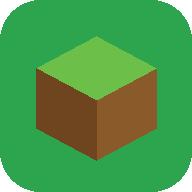

Panel Minecraft
Buscando el panel…El panel corre en Termux (con Java y Node). Esta app lo arranca en segundo plano y lo abre.
Configuración (solo la primera vez)
- Tener Termux instalado (de F-Droid o GitHub).
- En Termux, permitir que esta app le mande órdenes. Copia y pega en Termux:
mkdir -p ~/.termux && grep -q '^allow-external-apps' ~/.termux/termux.properties 2>/dev/null || echo 'allow-external-apps = true' >> ~/.termux/termux.properties; termux-reload-settings
- Dar a esta app el permiso "Ejecutar comandos en Termux":
- Solo en un equipo nuevo: instalar Ubuntu, Java, Node y el panel (unos 15 min, se ve el avance en Termux):
- Recomendado: en Ajustes de Android → Apps → Termux → Batería → Sin restricciones, para que no se cierre mientras juegan.
Avanzado
Registro del arranque en Termux: ~/mc-panel.log